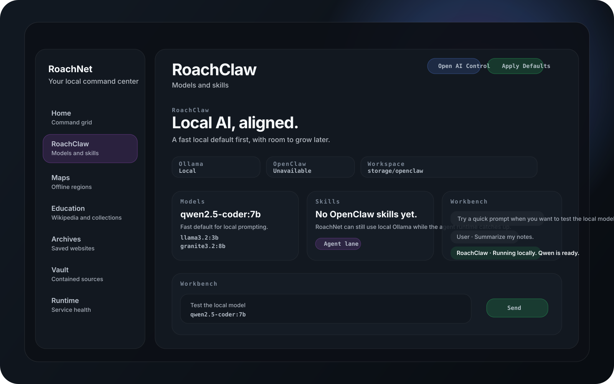
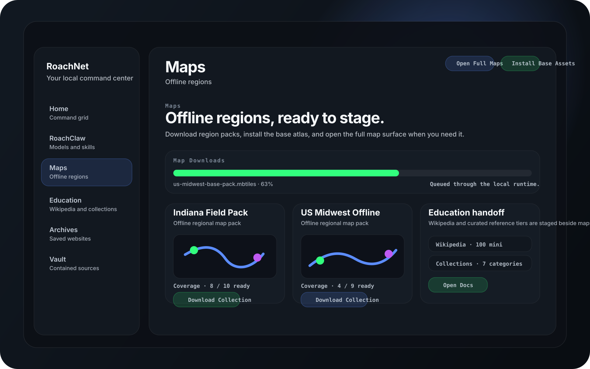
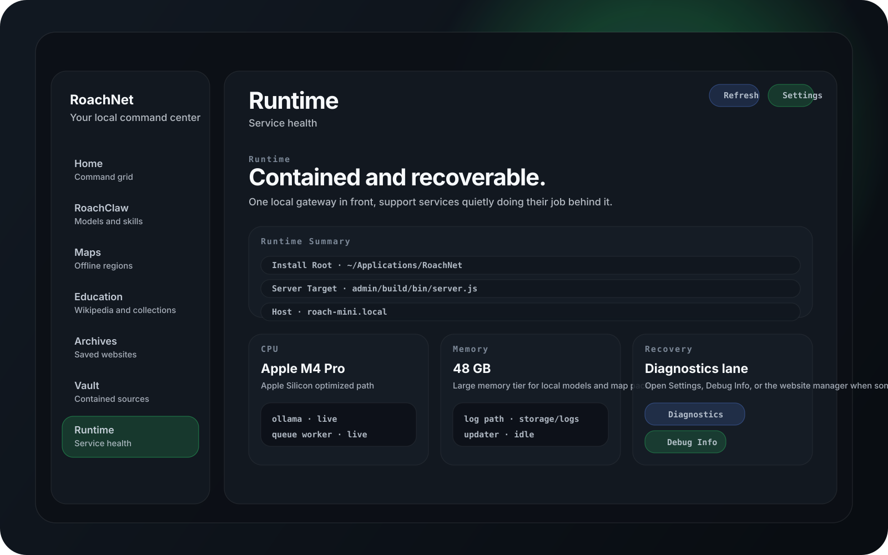

Bring your stack home.
Run models, tools, and services in a local runtime that actually lives on your desktop instead of somebody else’s data center.
RoachNet
Offline maps, local AI, and your own notes in one calm little command center that lives on your machine.
Built for Apple Silicon, Windows 11, and Linux desktops.
What RoachNet is
RoachNet keeps the important things close: where you’re going, what you’re working on, and the ideas you don’t want to lose in some cloud tab.
Run models, tools, and services in a local runtime that actually lives on your desktop instead of somebody else’s data center.
RoachClaw glues OpenClaw and Ollama into one sane local AI setup, with a fast default model for your box.
A focused, keyboard-first view for maps, AI, services, and what your machine is up to.
Routes, checklists, lyrics, patch notes, and weird ideas at 3 AM all live in one place instead of random folders.
RoachNet keeps the app, data, workspace, and services grouped together so you can back it up, move it, or nuke it in one go.
Screens
Three main views hold your world together when the network stops pretending to be reliable.
Home is the first pane in the native shell, with the same command bar, metric cards, and launch grid you see in the app itself.

The native app exposes the same model status, skill list, workspace lane, and prompt workbench that RoachNet uses to keep local AI close to the machine.

Maps, Wikipedia, and curated education tiers are all staged through the native shell, with download progress and the next action visible in one place.

The runtime pane is where RoachNet surfaces install roots, server targets, hardware context, and the diagnostics lane when something needs attention.
Where RoachNet shines
RoachNet is for people who still need their tools when the network is flaky, slow, or straight-up gone.
Keep reference docs, AI tools, notes, and routing maps in one offline-ready workspace. Your session doesn’t have to care what the ISP is doing.
Bring maps, checklists, local AI, and your vault with you so a bad network just means slower memes, not blocked work.
RoachNet runs on your machine, so your work keeps moving when hosted tools slow down, rate-limit, or disappear for maintenance.
Why RoachNet
Producers, engineers, and builders who want their tools to show up every time they do, no matter the network.
RoachNet stays out of your way until you need it, then gives you exactly what you need, fast.
Download
Install RoachNet on your desktop and keep the important stuff tied to your machine, not to a connection.